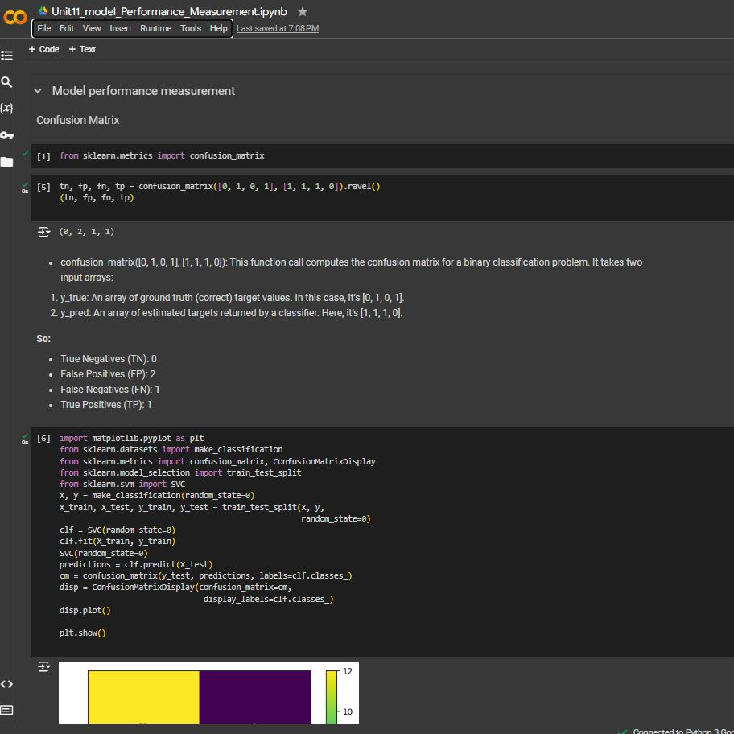

Model Selection and Evaluation
We learned about various evaluation metrics like accuracy, precision, recall, F1-score, ROC-AUC, and R2 error. We also explored the bias-variance tradeoff to balance overfitting and underfitting and implemented k-fold cross-validation. These concepts were reinforced through exercises observing the impact of parameter changes on AUC and R2 error.
This module significantly enhanced my analytical skills, enabling me to critically assess model performance using comprehensive metrics like ROC-AUC. These concepts were reinforced through exercises observing the impact of parameter changes on AUC and R2 error. During the development individual project assignment, I gained through hands-on experience with hyperparameter tuning and cross-validation, boosting my confidence in applying these techniques in implementing a CNN. Understanding the bias-variance tradeoff help me develop models that generalize well while the use statistical measures like ROC-AUC for model selection added a quantitative aspect to my decision-making process, ensuring grounded and effective model selection (Vujović, 2021).
Moving forward, I will apply the learned techniques for model evaluation and selection in my projects to ensure robust and high-performing models. I plan to stay updated with new evaluation metrics and tuning techniques to continually enhance my skills. Adopting a holistic approach, I will consider multiple metrics and understand trade-offs for balanced decisions.
e-Portfolio Activity: Model Performance Measurement
Results
Regression metrics
RMSE measures the average magnitude of the errors between predicted values and true values.
In this case, RMSE is 0.375.
A lower RMSE indicates better model performance. Here, the small RMSE suggests that the model’s predictions are close to the true values.
MAE computes the average absolute differences between predicted and true values.
Here, MAE is 0.5.
Smaller MAE values indicate better accuracy, as the model’s predictions are closer to the true values.
Conclusion
The model has reasonably low RMSE 0.375 and MAE 0.5, suggesting good performance.

Observations:
When tuning hyperparameters, adjusting(decreasing) the learning rate and increasing the number of iterations decreased the cost,
References:
Vujović, Ž., 2021. Classification model evaluation metrics. International Journal of Advanced Computer Science and Applications, 12(6), pp.599-606.